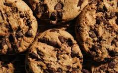

Chocolate Chip Cookies

Description
These classic chocolate chip cookies are soft on the inside with lightly crisp edges. They're quick to make using simple pantry ingredients, making them a great choice for an afternoon snack or dessert.
Whether enjoyed warm from the oven or stored for later, these cookies are a crowd-pleaser and pair perfectly with a glass of milk.
Ingredients
- 2 cups all-purpose flour
- 1/2 cup butter, softened
- 1/2 cup brown sugar
- 1 egg
- 1 tsp vanilla extract
- 1 cup chocolate chips
Steps
- Preheat the oven to 350°F (175°C) and line a baking sheet with parchment paper.
- Mix the butter, brown sugar, egg, and vanilla until smooth, then stir in the flour.
- Fold the chocolate chips into the dough until evenly distributed.
- Scoop spoonfuls of dough onto the prepared baking sheet.
- Bake for 10–12 minutes, or until the edges are lightly golden.
- Let the cookies cool for a few minutes before serving.
Home